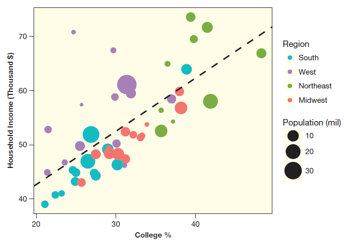
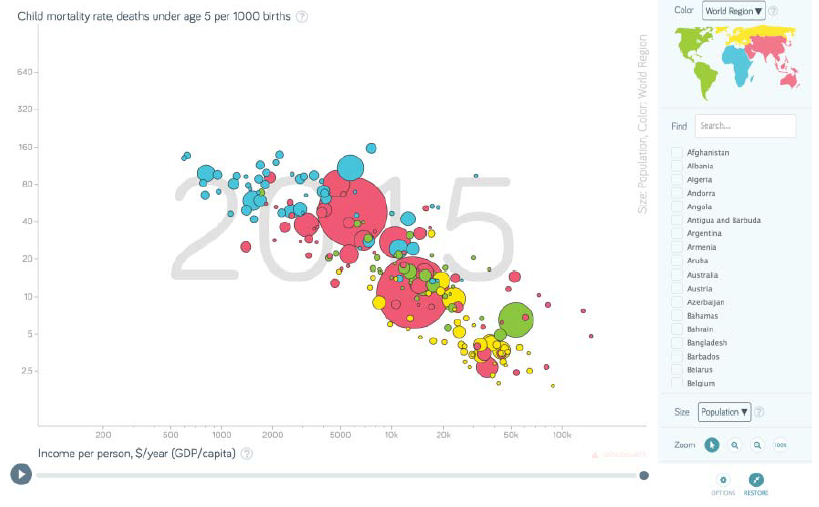
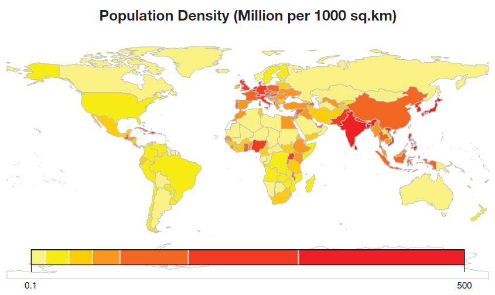
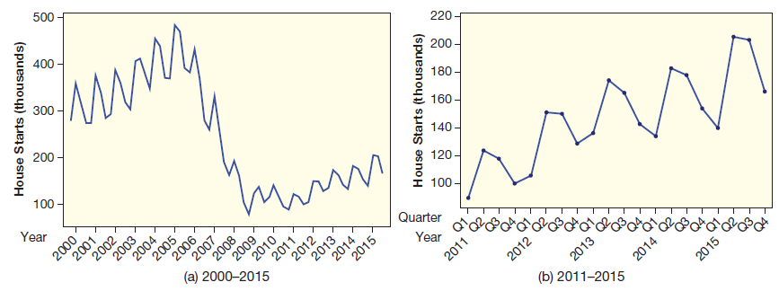
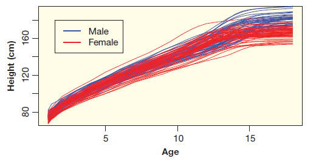
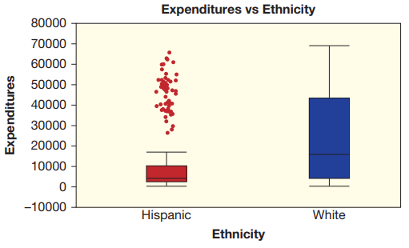
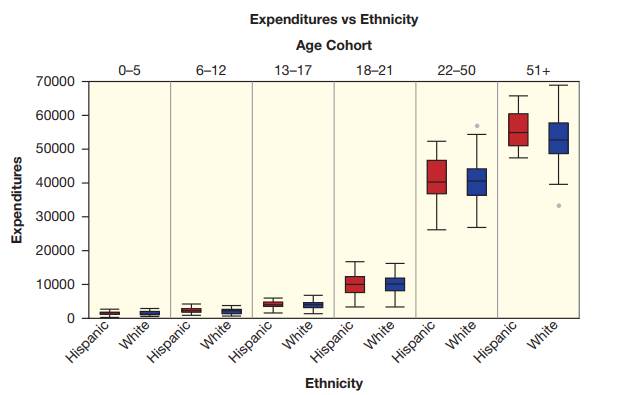
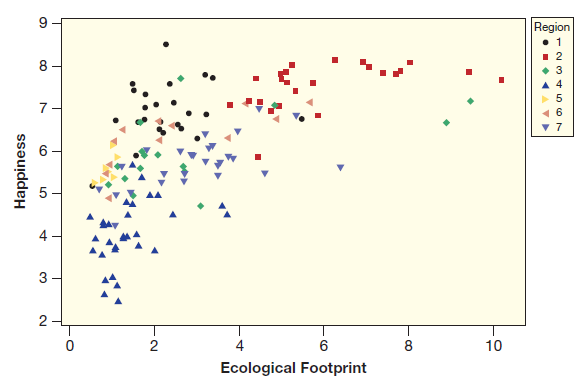
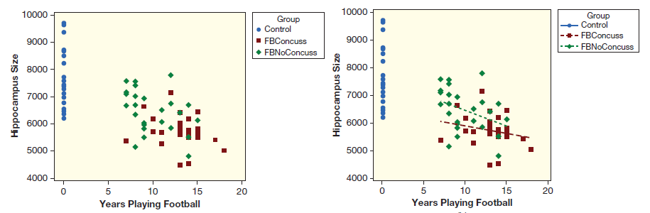

2.7 데이터 시각화와 다중 변수
지금까지는 변수 하나의 분포에 대한 그래프(히스토그램 또는 막대그래프), 변수 두 개의 관계에 대한 그래프(산점도 또는 상자그림)를 시각화하는 방법을 배웠다. 이러한 기본적인 방법을 확장하거나 새로운 형태의 그래프를 가지고 변수가 세 개 이상일 때 더 많은 정보를 시각화하는 기법을 알아보자.
산점도: 변수가 두 개보다 많은 경우
2.5절에서 양적 변수가 두 개인 경우 산점도를 그리는 방법을 배웠다. 산점도에서는 변수 하나는 수평 축, 다른 변수는 수직 축으로 놓고 두 변수 쌍의 좌표를 점으로 표시한다. 점의 크기, 모양, 색을 다르게 하는데 변수를 사용할 수 있다.
아래 버블 차트(bubble chart)는 미국의 주별 가계 수입과 대졸자 비율을 산점도로 표현한 것이다. 각 점의 크기는 주의 인구수에 비례하고 지역에 따라 색이 다르다. 산점도에는 총 \(4\)개의 변수가 사용되었다. 양적변수는 \(3\)개(Household Income, College, Population), 범주형변수는 \(1\)개(Region)이다. 가계수입을 대졸자의 비율로 예측하는 회귀선이 산점도에 추가로 그려져 있다. 이 산점도를 이용하여 변수 \(4\)개에 대한 여러가지 질문에 답할 수 있다.

예제 2.47. 위 산점도는 미국의 각 주별 수입, 교육, 인구, 지역에 대한 정보를 보여준다.
(1) 수입이 가장 많은 주의 인구는 대략 몇 명이고 어느 지역인가?
(2) 대졸자 비율이 가장 높은 지역은 대략 어디인가?
(3) 대졸자의 비율과 비교할 때 수입이 높은 지역은 어느 곳인가?
풀이 (클릭하면 풀이가 보입니다)
(1) 수입이 가장 높은 주의 수입은 \(7\)만 달러가 넘는다. 이 주의 인구를 나타내는 점의 크기는 그림 오른쪽의 범례에서 보이는 천만 명의 점의 크기보다 약간 작다. 지역은 북동으로 메릴랜드 주이다.
(2) 녹색으로 표시된 주의 대졸자 비율이 높은 경향이 있다. 이 주들은 북동쪽이다.
(3) 자주색으로 표시된 주의 수입은 대졸자의 비율을 고려할 때 가계 수입이 높다. 자주색 점 몇 개는 회귀선보다 훨씬 높은 곳에 있다.
위 질문을 데이터 USStates를 보고 답할 수 있는가?
확인문제 1. 산점도를 확장하여 세 개 이상의 변수를 시각화하는 방법으로 적절한 것은?
1 변수 하나는 수평축, 다른 변수는 수직축으로 놓고 나머지 변수는 추가할 수 없다.
2 산점도에서 점의 크기, 색상, 모양을 사용하여 추가 변수를 나타낼 수 있다.
3 산점도를 사용할 수 있는 변수의 개수는 두 개로 제한된다.
4 두 개 이상의 변수를 포함하는 그래프는 산점도가 아니라 히스토그램을 사용해야 한다.
확인문제 2. 버블 차트에서 점의 크기가 의미하는 것은 무엇인가?
1 항상 동일한 크기로 설정되며, 변수를 나타내지 않는다.
2 범주형 변수를 표현하는 데 사용된다.
3 보통 특정 양적 변수(예: 인구수 등)에 비례하여 크기가 결정된다.
4 점의 크기는 무작위로 결정되며 데이터와 관계가 없다.
확인문제 3. 위 Example \(2.47\)에서 가계 수입이 가장 높은 주의 특징을 올바르게 설명한 것은?
1 인구가 매우 적으며, 서부 지역에 위치한다.
2 인구가 비교적 많고, 북동 지역에 위치한다.
3 대졸자 비율이 가장 낮고, 중서부 지역에 위치한다.
4 인구와 관계없이 가장 높은 수입을 가지며, 남부 지역에 위치한다.
그래프를 동적으로 만들면 사용자의 변수 선택에 따라 추가적인 정보를 제공할 수 있다. 동적이면서 사용자와 상호작용이 가능한 산점도로 유명한 예는 Gapminder 이다. 이 애플릿은 국가별 건강, 경제, 환경이 시간이 지남에 따라 어떻게 변하는지 보여준다. 사용자는 여러 개의 변수 중에서 두 개를 선택하여 산점도의 축으로 사용하고 다른 변수는 시간이 지남에 따라 어떻게 변하는지 관찰할 수 있다.

예제 2.48. 갭마인더 애플릿에서 수직축은 유아사망률(child mortality rate, \(1000\)명당 \(5\)세 이하 아동 사망률), 수평축은 \(1\)인당 GDP로 설정한다. 플레이 버튼을 클릭하여 산점도가 시간이 지남에 따라 어떻게 변하는지 관찰하라. 동적 산점도로부터 다음 질문에 답할 수 있다.
(1) \(2015\)년 유아사망률과 \(1\)인당 GDP는 양의 연관인가 아니면 음의 연관인가?
(2) \(1800\)년에 \(1\)인당 GDP가 가장 높은 국가는? \(2000\)년에는 어느 국가인가?
(3) \(1800\)년에 인구가 가장 많은 두 국가는? \(2015\)년은?
(4) 일반적으로 \(1800\)년부터 \(2015\)년까지 유아사망률과 \(1\)인당 GDP는 어떤 관계가 있는가?
풀이 (클릭하면 풀이가 보입니다)
(1) 위 그림을 보면 \(2015\)년에 유아사망률과 \(1\)인당 GDP는 음의 연관이 있음이 분명하다.
(2) 연도를 \(1800\)년으로 하고 가장 오른쪽에 있는 점 위에 마우스를 올려 놓으면 \(1\)인당 GDP가 가장 높은 국가는 네덜란드임을 알 수 있다. \(2000\)년에는 룩셈부르크이다.
(3) \(1800\)년에 인구가 가장 많은 두 국가는 중국과 인도이다. \(2015\)년에도 인구가 가장 많은 국가는 중국과 인도이다.
(4) 시간이 지나면서 유아사망률은 감소하고 \(1\)인당 GDP는 증가하는 것을 볼 수 있다.
지리 데이터 시각화
데이터에 지리 정보가 있을 때 지도 위에 요약 통계량을 표현하면 이해하기 쉽다. 변수가 범주형이면 각 범주를 다른 색으로 표현한다. 연속형이면 컬러 스텍트럼을 이용하는데 이런 그림을 히트맵(heatmap)이라고 한다.
세계 여러 국가의 인구 밀도(AllCountries)를 히트맵으로 그려보자. 아래 그림에서 각 국가의 색은 인구밀도로 결정된다. 인구밀도가 낮으면 노란색이고 높으면 빨간색이다.

예제 2.49. 위 그림으로부터 미국, 인도, 캐나다, 멕시코, 중국의 인구밀도가 낮은 국가부터 순서대로 나열하라.
풀이 (클릭하면 풀이가 보입니다)
각 국가의 색깔을 비교하여 인구밀도가 낮은 국가부터 순서대로 나열하면 캐나다, 미국, 멕시코, 중국, 인도이다.
시계열 자료 시각화
여러 시점에서 반복 측정하여 얻은 데이터를 그래프로 그려야 할 때가 있다. 시간은 수평축, 양적변수는 수직축에 설정한다. 각 시점의 데이터를 점으로 찍어 연결하면 추세를 파악하는데 도움이 된다. 이러한 그래프를 시계열(time series) 도표라고 하는데 여러 단기 변동 중에서 장기적인 추세, 계절적 변동을 발견할 수 있다.

예제 2.50. 경제 활동을 측정하는 지표로 신축 주택수(HouseStarts)를 활용 한다. 위 그래프는 \(2000\)~\(2015\)년 사이 미국의 신축 주택수를 시계열 도표로 그린 것이다. 왼쪽 그림은 \(16\)년 전체 자료이고 오른쪽은 \(2011\)~\(2015\)년까지 \(5\)년치 자료이다. 두 그림을 보고 신축 주택수에 어떤 추세가 있는지 설명하라.
풀이 (클릭하면 풀이가 보입니다)
왼쪽 그림을 보면 신축 주택수는 증가하다가 세계적인 경제 대침체 시기인 \(2006\)년부터 \(2009\)년까지 감소하였다. \(2009\)년부터 완만한 회복세를 보이지만 \(2000\)년대 초 수준보다는 낮다. 오른쪽 그림은 \(5\)년 동안의 계절 패턴을 보여준다. 신축 주택수는 겨울(\(1\)분기)에 낮은 수준이다. 봄(\(2\)분기)에 높은 수준으로 급속히 증가하여 여름(\(3\)분기)까지 꽤 높은 수준을 유지하다가 가을(\(4\)분기)에 상당히 감소한다. 이 패턴은 신축에 적절한 날씨의 영향을 반영한다. 이러한 계절 변동은 \(5\)년동안 반복되지만 전체적으로 증가하는 추세이다.
확인문제 1. Gapminder 애플릿에서 시계열 데이터를 시각화할 때 적절한 방법은?
1 특정 연도에서 두 개의 변수를 비교하는 정적인 산점도를 사용한다.
2 시간의 흐름에 따라 데이터를 시각적으로 움직이게 하여 패턴을 관찰할 수 있다.
3 시계열 데이터를 분석할 때 항상 히스토그램을 사용해야 한다.
4 변수가 두 개 이상이면 시각화할 수 없다.
확인문제 2. 다음 중 히트맵(heatmap)의 특징으로 올바른 것은?
1 데이터의 특정 패턴을 색상의 강도로 표현할 수 있다.
2 모든 데이터에 대해 동일한 색을 사용하여 변화를 감지하기 어렵다.
3 지리 정보를 포함한 데이터에는 적절하지 않다.
4 양적 변수 대신 범주형 변수만 표현할 수 있다.
확인문제 3. 시계열 그래프에서 계절적 변동이 나타날 가능성이 가장 높은 데이터는?
1 연도별 국내총생산(GDP) 변화
2 월별 에너지 소비량
3 국가별 평균 기대수명 변화
4 지역별 연간 평균 강수량
\(1940\)년대에 \(39\)명의 남자 아이와 \(54\)명의 여자 아이의 키를 \(18\)년 동안 \(30\)번의 다른 시점에서 반복 측정한 자료가 있다(HeightData). 나이를 수평 축, 키를 수직 축에 놓고 각 아이의 \(30\)개의 다른 시점의 키를 선으로 연결한다. 모든 아이의 키에 대한 시계열 도표가 아래에 있다. 파란색은 남자 아이, 빨간색은 여자 아이이다.

예제 2.51. 위 그림으로부터 다음 질문에 답하라.
(1) 일반적으로 여자 아이는 언제 키 성장을 멈추는 경향이 있는가? 남자 아이는 어떤가?
(2) \(2\)~\(12\)세 사이에 키가 가장 많이 커진 아이의 성별은?
풀이 (클릭하면 풀이가 보입니다)
(1) 여자 아이는 \(13\)~\(14\)세 사이에 성장이 상당히 느려지는 경향이 있다. 남자 아이는 \(15\)~\(16\)세 사이인 것으로 보인다.
(2) \(2\)~\(12\)세 사이에 빨간색 선 하나가 위로 벗어나 있다. 키가 가장 많이 커진 아이는 여자이다.
범주 세분화
데이터의 모든 케이스를 포함하는 그림을 하나 그리고 결론을 얻는 대신에 소규모 그룹 별로 나누어 그래프를 그릴 때 새로운 통찰력(insight)을 얻거나 중요한 사실을 발견할 수 있다. 아래 그래프는 자폐증, 뇌성마비, 지적장애 등과 같은 발달 장애가 있는 주민과 그 가족의 연간 지원금(DDS)을 인종 별로 상자그림을 그린 것이다.

예제 2.52. 위의 상자그림에서 히스패닉(스페인어를 사용하는 라틴계 미국인)과 백인의 연간 발달 장애 지원금을 비교하라.
풀이 (클릭하면 풀이가 보입니다)
상자그림을 보면 백인에 대한 지원금이 히스패닉보다 훨씬 많아 보인다. 각 그룹의 평균을 계산해보면 히스패닉은 \(\$11,066\)이고 백인은 \(\$24,698\)이다. 두 변수를 분석한 결과 장애 발달 지원금은 인종 차별이 매우 심함을 알 수 있다.

예제 2.53. 나이 그룹 별로 인종별 지원금의 상자그림이 위에 있다. 히스패닉과 백인의 연간 발달 장애 지원금을 비교하라.
풀이 (클릭하면 풀이가 보입니다)
예제 2.54. 나이 그룹 별로 각 인종의 사람 수를 비교하라.
풀이 (클릭하면 풀이가 보입니다)
\(0\)-\(5\)세 그룹에서 히스패닉은 대략 \(40\)명인데 백인은 \(20\)명이다. 막대 그래프는 어린 아이 그룹에서는 히스패닉이 많고 성인 그룹에서는 백인이 더 많음을 알려준다.
나이 그룹별 지원금의 상자그림과 나이 그룹별 각 인종의 사람 수를 종합해보자. 지원금을 받는 백인의 나이가 히스패닉보다 더 많은 경향이 있다. 그리고 나이 많은 사람이 더 많은 지원금을 받는 경향이 있다. 이것이 백인이 전반적으로 더 많은 지원금을 받는 이유를 설명한다. 즉, 차별이 존재하는 것이 아니고 단지 나이가 더 많다는 것 뿐이다. 여기서 나이는 중첩변수(confounding variable)이다. 나이는 인종과 지원금 모두에 연관이 있어서 관계를 혼란스럽게 만든다.
세 번째 변수로 데이터를 세분화 할 때 두 변수 사이의 관계가 사라지거나 역전되는 현상을 심프슨의 역설(Simpson’s Paradox)이라고 한다. 심프슨의 역설은 자주 나타나지 않지만 세 번째 변수를 고려할 때 두 변수 사이의 관계가 달라지는 경우는 흔히 발생한다.
확인문제 1. 다음 중 심프슨의 역설에 대한 설명으로 올바른 것은?
1 두 변수 사이의 관계가 세 번째 변수로 인해 달라지는 현상이다.
2 심프슨의 역설은 세 번째 변수를 고려할 때 두 변수의 관계가 항상 사라진다.
3 심프슨의 역설은 항상 두 변수 간의 관계가 약해지는 결과를 낳는다.
4 세 번째 변수는 반드시 양적 변수여야 한다.
확인문제 2. 다음 중 나이 그룹 별로 인종별 지원금에 대한 상자그림을 사용하여 알 수 있는 정보는?
1 나이가 많을수록 지원금이 줄어든다.
2 히스패닉 그룹은 백인 그룹보다 전체적으로 더 많은 지원금을 받는다.
3 나이가 어린 그룹에서 지원금이 더 많이 지급된다.
4 나이와 지원금 사이에는 연관성이 없다.
확인문제 3. 발달 장애 지원금에 대해 히스패닉과 백인 간의 상자그림을 비교한 결과, 전체적으로 백인이 히스패닉보다 더 많은 지원금을 받는다고 결론을 내릴 수 있는 이유는 무엇인가?
1 히스패닉은 평균적으로 지원금이 더 적다.
2 백인의 평균 연령이 히스패닉보다 높아, 나이가 많은 사람들이 더 많은 지원금을 받기 때문이다.
3 히스패닉은 지원금을 받는 인구가 적어 평균값에 영향을 미쳤다.
4 히스패닉은 전체적으로 지원금을 많이 받는다.
과제 2.20. 아래 그림은 교재의 데이터 HappyPlanetIndex에서 변수 3개(Happiness, Footprint, Region)를 가지고 그린 산점도이다.

(1)-a Happiness (각 변수가 양적이면 Q, 범주형이면 C로 표기하라)
정답: Q
(1)-b Footprint (각 변수가 양적이면 Q, 범주형이면 C로 표기하라)
정답: Q
(1)-c Region (각 변수가 양적이면 Q, 범주형이면 C로 표기하라)
정답: C
(2)-a 행복점수가 가장 높은 지역 2개는? (작은 숫자부터)
정답: 1, 2
(2)-b Footprint 값이 가장 큰 지역은?
정답: 2
(3)-a 행복점수가 가장 낮은 지역은?
정답: 4
(3)-b 이 지역의 Footprint 값은?
1 높다
2 낮다
(4) 지역을 고려하지 않을 때 행복점수와 Footprint 변수와의 관계는?
1 양의 연관
2 음의 연관
3 없음
(5) 지역 코드가 2인 서구만 생각할 때 행복점수와 Footprint 변수와의 관계는?
1 양의 연관
2 음의 연관
3 없음
(6) 행복점수가 가장 높은 나라는 코스타리카이다. 산점도에서 코스타리카의 위치는?
1 왼쪽 상단
2 왼쪽 하단
3 오른쪽 상단
4 오른쪽 하단
(7) 데이터를 개발한 Nic Marks는 더 많은 나라가 왼쪽 상단으로 이동하도록 노력해야 한다고 주장한다. 지역이 4(아프리카)인 나라들은 어떤 노력을 해야 하나?
1 행복 증진
2 행복 감소
3 Footprint 증진
4 Footprint 감소
(8) 지역이 2(서구)인 나라들은 어떤 노력을 해야 하나?
1 행복 증진
2 행복 감소
3 Footprint 증진
4 Footprint 감소
과제 2.21. 아래 그림은 세 그룹의 축구 경력과 뇌의 해마(hippocampus) 크기를 산점도로 그린 것이다. FBConcuss 그룹은 축구를 하다가 최소한 한 번 이상은 뇌진탕을 경험했고, FBNoConcuss 그룹은 뇌진탕 경험이 없으며, Control은 비축구 대조군이다.

(1)-a Hippocampus size (각 변수가 양적이면 Q, 범주형이면 C로 표기하라)
정답: Q
(1)-b Years playing football (각 변수가 양적이면 Q, 범주형이면 C로 표기하라)
정답: Q
(1)-c Group (각 변수가 양적이면 Q, 범주형이면 C로 표기하라)
정답: C
(2) 파란색 점들은 왜 왼쪽에 모두 쌓여 있는가?
정답: 축구 경력이 모두 0이기 때문이다.
(3) 축구 경력과 해마 크기와의 관계는?
1 양의 연관
2 음의 연관
3 없음
(4) 오른쪽 그림에서 두 그룹의 회귀선 중 어느 그룹의 회귀선이 더 낮은 곳에 있는가?
1 Control
2 FBConcuss
3 FBNoConcuss
(5) 회귀선 기울기는 어느 그룹이 더 가파른가?
1 Control
2 FBConcuss
3 FBNoConcuss